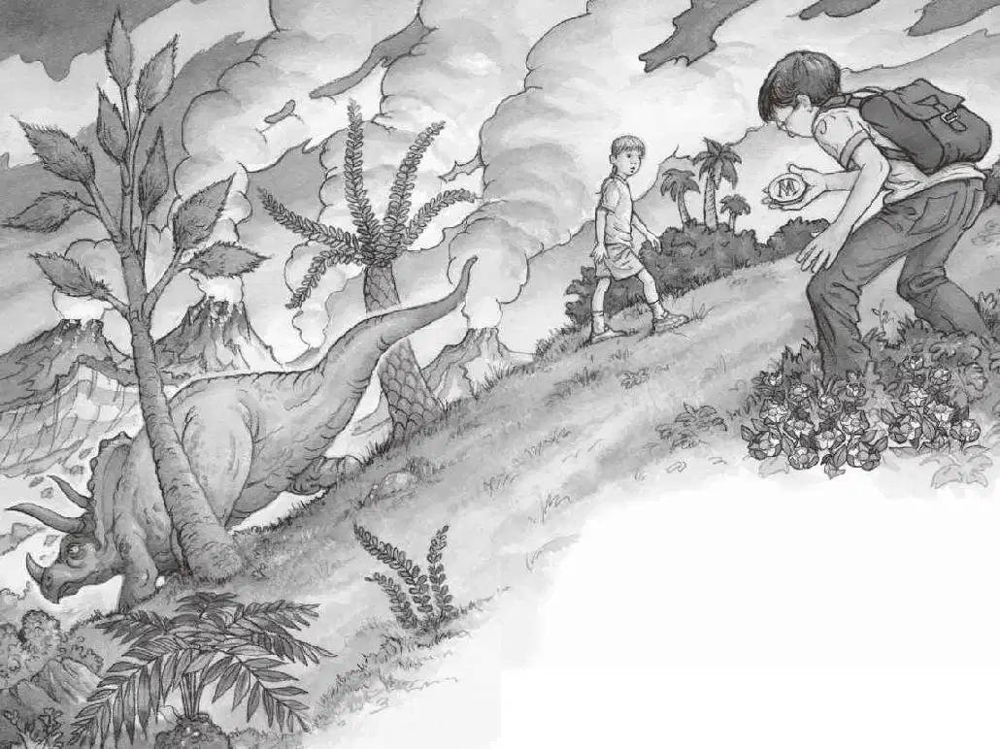

“走！快走！”杰克催促道。他把笔记本塞进背包，然后把安妮推向绳梯。“再见了，亨利！”安妮朝无齿翼龙挥挥手。“快走！”杰克又推了安妮一下。
“别推我！”安妮开始顺着绳梯往上爬，杰克手忙脚乱地跟在后面。
他们跌跌撞撞地进了树屋，气喘吁吁地看着窗外的那只恐龙。它正站在山顶上吃一棵树上的花。“哦，天哪，”杰克轻声说，“我们真的回到了很久很久以前！”
那只恐龙看上去像一头巨大的犀牛，只不过它有三只角，不像犀牛那样只有一只。它有两只角长在眼睛上面，另一只长在鼻子那儿。它脑袋后面还有个像盾牌似的大家伙。
“是三角龙！”杰克说。“它吃人吗？”安妮轻声问。“我查一下。”杰克抓起参考书，飞快地翻着。“找到了！”杰克指着一幅三角龙的图片，读出上面的说明文字：
三角龙生活在白垩纪晚期。
这种以植物为食的恐龙重达五千多千克。
杰克啪地把书合上，说：“它只吃植物，不吃肉。”
“太好了！”安妮说，“我们去近处看看它吧。”
“你疯了吗？”杰克大叫。
“你不是想做一些关于它的笔记吗？”安妮说，“我们可能是全世界第一批看见真正的三角龙的人呢。”
杰克叹了口气，心想：“没错，安妮说的是对的。”“好吧，我们走吧。”杰克说着把恐龙书塞进背包，然后把背包背在肩膀上。安妮开始顺着绳梯往下爬，杰克跟在后面。
“你答应我等会儿别摸它。”杰克大声对安妮说。
“我答应。”
“你答应我别亲它。”
“我答应。”
“你答应我别跟它说话。”
“我答应。”
“答应我，你别——”
“你就别担心啦！”安妮不耐烦地说。
安妮和杰克离开了绳梯。那只无齿翼龙十分友好地看了他们一眼。安妮朝它抛了一个飞吻，喊道：“我们很快就回来，亨利！”
“嘘！”杰克小声说。他在前面领路，慢慢地、小心翼翼地在蕨草丛中穿行。
到了山坡底下，杰克和安妮在一簇灌木丛后面跪了下来。安妮刚想说话，杰克立刻把手指按在嘴上，示意她别出声。
然后，两个人悄悄地探出头来，打量那只三角龙。
它比一辆卡车还大，正在吃一棵树上的花。
杰克从背包里掏出笔记本，写道：
安妮捅了捅他，杰克没有理睬。他又仔细看了看三角龙，低头写道：
安妮捅得更用力了，杰克回过头来看她。安妮指指自己，又用手指比画出走路的动作。然后她又笑着指指恐龙。
“她是在逗我吗？”杰克想。
安妮朝杰克挥挥手。杰克伸手要抓住她。安妮大笑着往旁边一跳，落在了草丛里，完全暴露在三角龙的视线中！
“快回来！”杰克轻声说。
来不及了，大恐龙已经发现了安妮。它在山顶上低头看着安妮，嘴边露出半朵花。
“哎哟。”安妮轻声说。“快回来！”杰克又叫了一声。
“它看上去脾气很好呢，杰克。”安妮说。
“脾气很好？当心它的角，安妮！”杰克喊。
三角龙平静地盯着安妮看了看，然后转过身，迈着大步走下山坡。“再见啦！”安妮喊完，转过身对杰克说，“你看，我说得没错吧！”
杰克哼了一声，不过他还是在笔记本上写道：

“快走吧。我们再四处看看。”安妮说。
杰克跟着安妮往前走，突然看见高高的野草丛中有个闪闪发亮的东西。他弯下腰，把它捡了起来，是一枚金质的圆勋章。勋章上刻着一个漂亮的字母M。
“天哪，有人在我们之前来过这儿！”杰克轻声说。